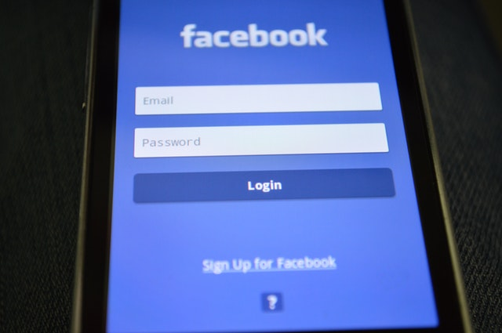

Introduction to e-mail marketing.
Written by Ntsikelelo Mnqokoyi, 8 November 2019
A marketing guru who goes by the name of Gary Halbert once posed a famous riddle which goes like this: “Suppose you’re given the opportunity to launch a hot dog stand on a beach right next to a competing hot dog stand. If you could choose one marketing advantage over your competitor, what would you choose? Would it be a favourable location, higher quality of ingredients, or the most beautiful waitresses?”
Gary says the only advantage that he would choose is a starving crowd (take the time to think about the simplicity of this answer).
Most business owners and entrepreneurs focus more on creating the ‘perfect product’ first before they start searching for customers to buy their product. These individuals are then met with regret and disappointment when they find out that no one really needs their ‘perfect product’ which leads to the inevitable failure of that business.
A truly smart entrepreneur would do the opposite of this and begin by looking for a ‘starving crowd’ first before creating the product to satisfy their hunger.
This ensures that all the hard work that was put into the creation of your business will be met with success in the form of a market of customers who are interested in your product and are willing to buy what they want from you.
What if I told you that it is possible to find and create your own market of starving consumers to market your product/services whenever you want to?
What if I told you that you could make even more money by renting this market of starving consumers to other businesses that are related to your industry (as long as they are not your direct competitors).
The beauty of technology in the 21st century makes this possible for all business owners. "How do I do this?", you ask yourself.
The answer is simple. Business owners from all over the world are now able to create their very own market of hungry customers by collecting e-mail addresses from potential or established customers who are interested in their product/services and saving them on a customer database to be used for marketing purposes later.
These business owners will either choose to compel potential customers into becoming established customers by marketing specials or deals to their e-mail subscribers or they can choose to rent out this list of e-mail subscribers and let other businesses related to your industry (except for direct competitors) market their products/services to your market of hungry customers. These two methods will increase the chances of generating more money for your business.
How do I increase the number of my number of e-mail subscribers?

We will discuss two good ways to generate more e-mail subscribers into your customer database of hungry customers
- By asking for it in your business’ website or
- Via Facebook (or any other social media platform).
You can create a pop up advertisement on your website which will offer something (such as a free report, or pdf file, or a discount towards their next purchase) to your potential customer in exchange for their e-mail address. Make sure that you offer something that your potential customers will really appreciate.
Alternatively, you can run an advertisement on Facebook and showcase your business to potential customers on Facebook and ask them to comment their e-mail address that you will save onto your e-mail customer database. You can use any of these two ways to grow your e-mail database and establish a sense of familiarity with your potential or established customers by keeping in touch with them.
You can use any of these two ways to grow your e-mail database and establish a sense of familiarity with your potential or established customers by keeping in touch with them.